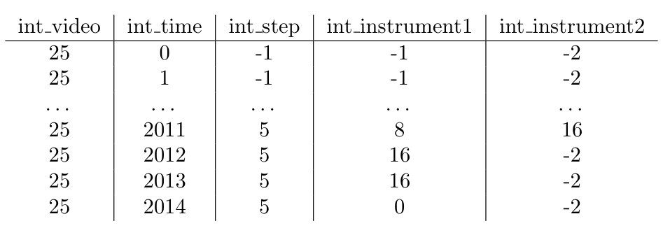
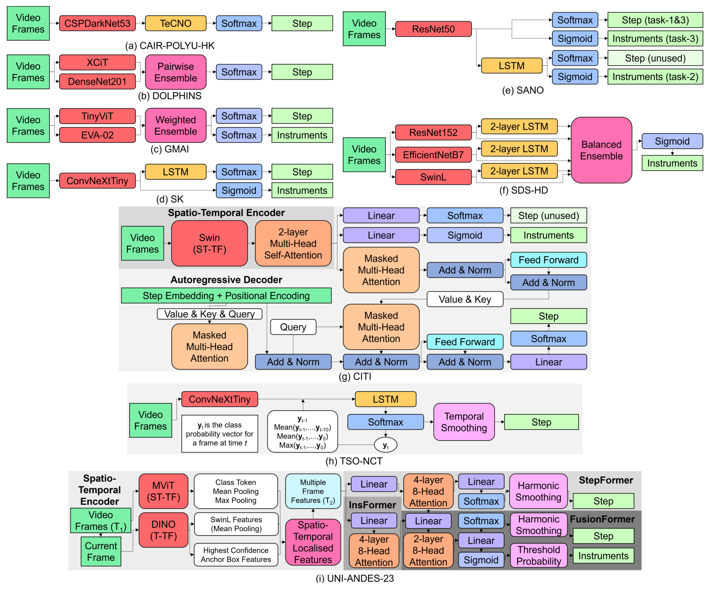
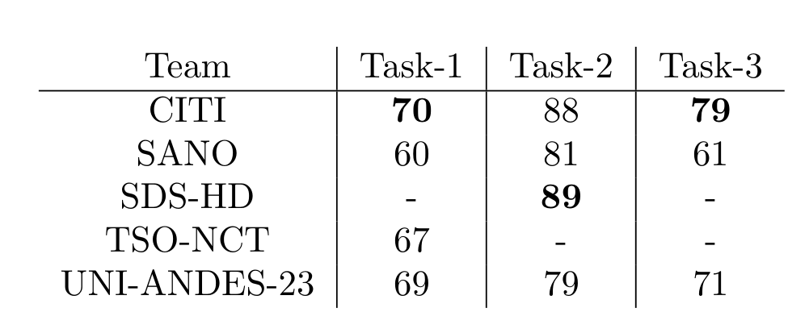
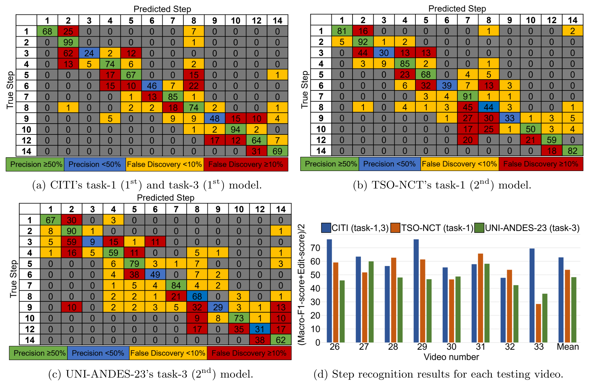

图文解读
1背景与动机
内镜经蝶入路垂体腺瘤切除（eTSA）从鼻孔进入颅底，术野窄、镜头细、畸变大。手术步骤短而多，切换频繁且顺序不固定；器械杆占满画面而尖端很小；出血时要反复退镜清洗。
此前这台手术只有私有数据上的步骤识别：50 个视频 7 步 weighted-F1 0.74，97 个视频 27 步视频级 0.80。器械识别和多任务识别都没有发表工作，社区也没有可下载的数据。
PitVis-2023 作为 EndoVis-2023 的子挑战，想同时补上数据和评测协议两块空白。
2核心观点速览
- 数据：25 个公开训练视频，逐秒标注 12 个评测步骤和 19 类器械（含无器械），8 个更早录制的私有视频做测试。
- 协议：只许在线推理；步骤排名是宏平均 F1 与 Edit-score 的平均，器械只看宏平均 F1。
- 结果：步骤最高 62.9，前三名 Edit-score 在 46 以上，后四名不到 2；器械最高 41.7，验证集上却有 89。
- 边界：结论来自跨队对比，不是受控消融；测试只有 8 个视频。
3数据怎么来、怎么标
数据来自单一中心 NHNN。训练视频录于 2021-07 至 2022-12，测试视频录于 2018-12 至 2021-01，测试全部早于训练。视频统一转成 24 FPS、720p，评测时按 1 FPS 抽帧。

步骤由两名神经外科住院医师标注并协商，器械外包给非临床标注公司，再由两人核对、顾问医师终审。标注者一致性论文未说明，所以少数器械的低分无法与标注噪声分开。
步骤 11、13 只出现在 2 个和 1 个训练视频中，被移出评测。器械分布训练与测试差异明显，杯状钳在测试集中完全缺席。这为第 6 节的验证集落差埋下伏笔。
4评测协议奖励什么
宏平均 F1 让每类等权；Edit-score 把逐帧标签压成片段序列后按编辑距离打分，任何短暂跳变都扣分。
$$\text{Macro-F1} = \frac{1}{N}\sum_{i=1}^{N} \text{F1}_i$$
步骤指标是两者平均，所以一半分数奖励"少跳变"。器械不计 Edit-score，因为器械变化频繁且被无器械与吸引器主导，多标签也无法写成单一序列。Edit-score 如何归一化到 0 到 100 论文未说明，复现时需看评测脚本。
运行限制是单块 V100 32 GB 上 10 倍速以上。下一节看各队用什么结构应对这套指标。
5参赛模型的共同结构
几乎所有模型都是三段：空间或时空编码器、时序解码器、在线平滑。

- CITI：Swin 时空编码器加 80 帧自回归解码器，三个任务共用一个模型。
- TSO-NCT：ConvNeXtTiny 加 512 帧 LSTM，把历史 softmax 分数送回 LSTM，再做 7 帧阈值平滑。
- SDS-HD：三个骨干各接 LSTM 再集成，对 5 类少数器械上采样。
各队训练时长从 2 到 88 小时不等，任何跨队差距都混杂了算力与工程投入。
6结果说了什么
| 任务 | 第一名 | 分数 | 第二名 | 分数 |
|---|---|---|---|---|
| 步骤 | CITI | 62.9 | TSO-NCT | 53.7 |
| 器械 | SDS-HD | 41.7 | SANO | 41.6 |
| 多任务 | CITI | 49.0 | UNI-ANDES-23 | 40.5 |
步骤任务里 SANO 的单帧模型 Macro-F1 仍有 39.6，但 Edit-score 只有 1.4，失分来自来回跳变。器械任务赢家是常规的 CNN 加 LSTM 加数据平衡，赢过了更复杂的多任务模型。

器械从验证集的 88-89 掉到测试的约 42，步骤只降约 7。所以验证集上的器械分数不能当作真实水平。
7为什么会这样

步骤错误集中在相邻步骤和短而零散的止血步骤，与转移概率不固定一致。器械错误大量流向无器械和吸引器两个主导类，器械 4、12、13 在前两名上都差。
器械的验证到测试落差，作者归因于对少数类过拟合。录制时间造成的分布偏移是同样能解释的另一原因，论文没有把两者分开。我的判断：后者至少同样重要，因为杯状钳在测试集里根本没出现。
8结果没说什么
- 时序或多任务"更好"没有受控对照：同一骨干加与不加时序解码器的实验不存在。CAIR-POLYU-HK 用了时序卷积网络，Edit-score 仍只有 1.1，原因论文未说明。
- 多任务增益只在 UNI-ANDES-23 一队上可从表格复算；SANO 的降幅正文写 −1.4 与 −4.5，按表格复算不一致，原因论文未说明。
- 排名稳定性论文未说明：只有 8 个视频，相邻名次常落在一个标准差以内。
- 单中心、单设备，跨医院泛化完全未测。
9复现要注意什么
- 用公开评测脚本复算 Edit-score，不要按 1/Lev 自己实现。
- 按录制时间留出验证视频，模拟训练与测试的时间偏移。
- 剔除体外帧和步骤 11、13 的帧，否则与官方口径不一致。
- 数据许可为 CC BY-NC-SA 4.0，不能商用。